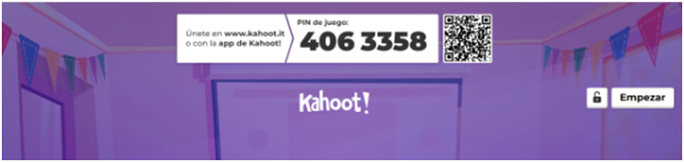

INSTRUMENTOS DE EVALUCIÓN
MOTIVACIÓN
Para este instrumento, he creado un Kahoot donde vamos a comprobar el nivel de comprensión de la lectura como actividad de motivación que vamos a trabajar al inicio de la SdA. Al ser una actividad de motivación, Kahoot nos ayudará a tal fin ya que plantea preguntas a forma de juego. Nos dará un feedback en el momento, tanto durante como al terminar el juego. Este conocimiento de resultado será significativo tanto para mí como docente como para el alumnado. Será el punto de partida de la temática que engloba la situación de aprendizaje y es fundamental que los resultados de este kahoot sean positivos.
Aquí dejo enlace de Kahoot sobre los anuncios publicitarios publicitarios:
https://create.kahoot.it/share/anuncios-publicitarios/f80df90a-53ff-4d01-a427-5fb40f9fd864

APLICACIÓN
Para este instrumento vamos a llevar a cabo un Scratch y un makey makey, donde realizarán diferentes juegos con los materiales construidos, y que después deben seleccionar y/o elegir para llevarlos al producto final. En este caso cada alumno realizará diferentes pruebas en las que mediante debates propondremos los que más nos han gustado o nos han resultado más interesantes de llevar a cabo para sus productos finales, en este caso yo como docente indagaré para descubrir los motivos mediante algún debate donde los alumnos/as propongan propuestas de mejora y otras reglas para que sean más amenos y promuevan la participación.
En este caso estamos valorando el proceso de enseñanza-aprendizaje, por lo que será un referente útil para la reflexión docente al tiempo que van seleccionando los sonidos que al alumnado más divertidos les parece y les ayude a organizar el anuncio final.
Facilito una imagen, en la siguiente página, donde se pueden ver algunos pantallazos :

EXPOSICIÓN
A la hora de exponer he creado un cuestionario en Google Forms a modo de autoevaluación del alumnado, que junto a mi registro anecdótico y mi ficha de observación, nos darán datos relevantes relacionados con las acciones y actitudes que hay en cada una de las preguntas y que a su vez está relacionado con varios criterios de evaluación de mi situación de aprendizaje. Espero una calificación positiva de los parámetros recogidos, basados principalmente en la actitud y la participación. Al mismo modo serán datos para contrastar con lo recogido en mis fichas de registro y en particular en la ficha individual de cada uno de los alumnos y alumnas del grupo.
Dejo enlace de la entrevista: https://docs.google.com/forms/d/e/1FAIpQLSdUrXBDlZp047oxKBAegK1cMZv_K8y9hWDBF1G8ziOHCvrWlg/viewform?usp=publish-editor